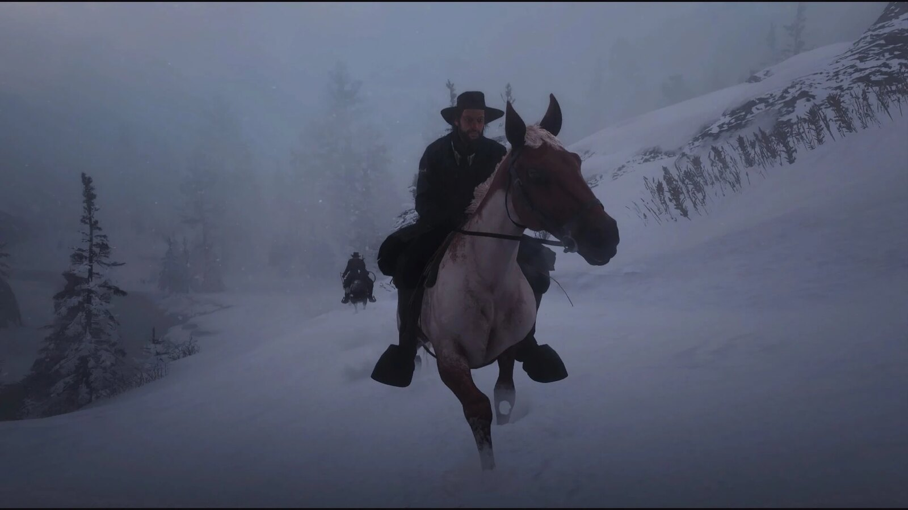
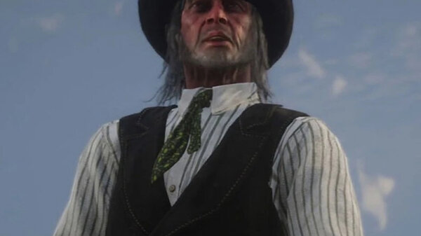
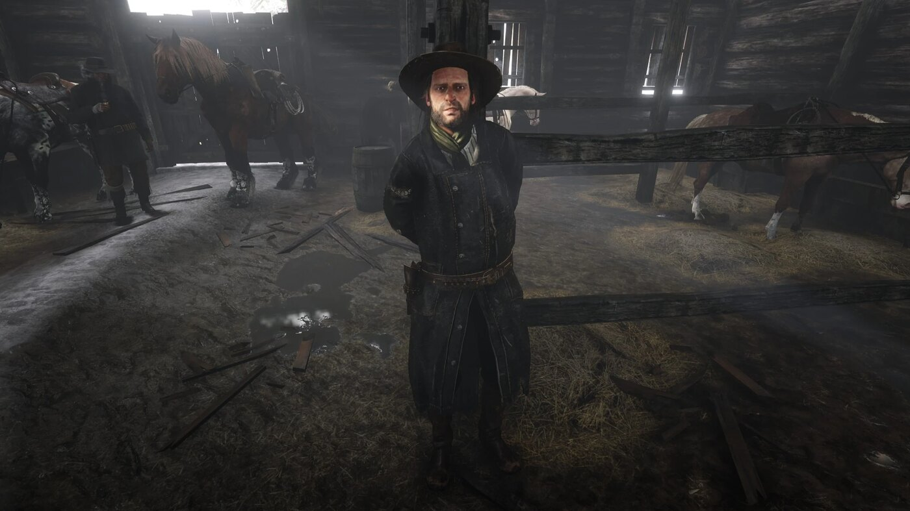

Character · Van der Linde gang
Kieran Duffy
Kieran Duffy is a former member of the O'Driscoll Boys who is captured by the Van der Linde gang and slowly becomes one of their own. Timid and eager to please, he is less an outlaw than a frightened young man trying to survive between two gangs that have spent years killing each other.
Caught by Arthur Morgan in the mountains around Colter, Kieran spends much of Red Dead Redemption 2 earning the gang's trust as their stable hand before meeting a brutal end.
- Died
- 1899
- Status
- Deceased
- Nationality
- American
- Affiliation
- O'Driscoll Boys (former), Van der Linde gang
- Role
- Stable hand
- Games
- Red Dead Redemption 2
Biography
From O'Driscoll to prisoner
Kieran is captured after the gang raids an O'Driscoll camp during their escape into the mountains, lassoed by Arthur in the mission "Old Friends". Held prisoner at Colter and then at Horseshoe Overlook, he is distrusted and threatened, but eventually warns the gang of an O'Driscoll ambush, proving he is not a spy.
A place in the camp
Allowed to stay, Kieran makes himself useful tending the gang's horses and slowly wins a cautious acceptance. He develops a shy attachment to camp member Mary-Beth Gaskill, though Dutch and others never fully trust his O'Driscoll past.
Personality
Kieran is gentle, nervous and desperate to belong. He joined the O'Driscolls for protection rather than out of cruelty, and among the Van der Lindes he is hard-working and harmless, the least violent man in a camp full of killers.
Relationships

Arthur Morgan
The man who captures him and, over time, one of the few who treats him with a measure of fairness.

Dutch van der Linde
The gang's leader, who tolerates Kieran but never lets go of his suspicion of a former O'Driscoll.

Colm O'Driscoll
His former gang leader, whose war with the Van der Lindes ultimately gets Kieran killed.

John Marston
A gang member alongside whom Kieran works in the camp's day-to-day life.
Death and fate
Kieran is killed in 1899 during the gang's feud with Colm O'Driscoll. While the gang is camped at Shady Belle, O'Driscolls behead him and send his body riding into camp to open an ambush. It is one of the most shocking deaths in the game.
Behind the scenes
Kieran appears only in Red Dead Redemption 2 (2018). His arc, from enemy prisoner to trusted hand, is often cited as an example of the game's willingness to kill off sympathetic characters without warning.
Trivia
- He is captured in the mission "Old Friends".
- He has feelings for fellow camp member Mary-Beth Gaskill.
- He proves his loyalty by revealing an O'Driscoll ambush.
Gallery
